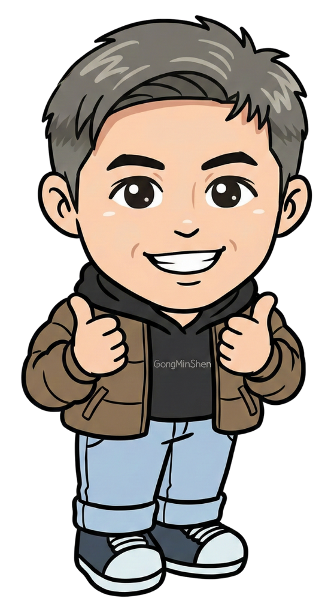

「歷經了神選之修，從高一漫遊雙溪、桌遊看社會、雙溪小記者，
高二媒體識讀、高三雙溪公民行動...
你已經蓄勢待發準備『變態』了嗎？」
歡迎你在高三下，高中生涯的最後一個學期，加入我們的行列！
這門課，我們不只玩，更要創造對話
高三的你，是否渴望將課本中的歷史脈絡、地理疆界與公民議題，轉化為觸手可及的真實體驗？
這門課將引導你跳脫紙筆，以「社會設計師」的視角，將複雜的人文社會議題，濃縮為一盒充滿挑戰與反思的桌上遊戲。我們不追求單純的娛樂，而是尋求透過遊戲機制，引發玩家的同理心，並建構一個可以深度對話的場域。
黃金師資陣容

陳志驅 老師
歷史爆帥名師

邱俐瑜 老師
公民神兼資訊神
從經典機制，洞察社會的縮影
-
歷史模擬與推演：
理解歷史充滿了結構限制、利益權衡與偶然的變數。 -
資源分配與談判：
反思社會資源分配的公平性，並在談判中兼顧個人利益與群體共識。 -
合作與衝突機制：
探索信任的建立與瓦解、團體動力的形成。 -
資訊不對稱與邏輯推理：
體驗資訊落差如何影響決策，還原事件的真相。
一學期 18 週的深度探索
| 週次 | 階段 | 內容規劃 |
|---|---|---|
| W1-W4 | 解構與洞察 | 課程導論：從「玩家」到「設計師」。分析經典遊戲機制如何與主題結合。 |
| W5-W10 | 議題與轉化 | 確立研究議題（環境、族群、正義等），將核心概念轉化為遊戲機制。 |
| W11-W16 | 創造與迭代 | 原型(Prototype)製作與測試。撰寫規則書，反覆修正平衡。 |
| W17-W18 | 發表與對話 | 成果發表會！闡述設計理念，邀請師生共同體驗與反饋。 |
社會設計力評量
NO! 不用考試背課本，我們看重過程與深度！
議題研究報告
展現你對所選議題的理解與洞見。
設計歷程紀錄
呈現從發想到成品，測試與修正的軌跡。
原型實作與成品
最終的桌遊作品，含配件與規則書。
成果發表
公開介紹作品的設計理念與核心價值。